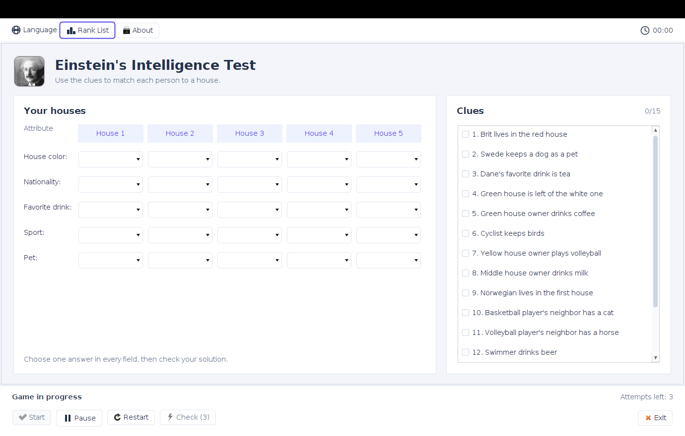

Start with a clue.
Some tell you a direct match. Others describe a neighbour or a position. Every detail matters.
A little curiosity. A lot of deduction.
Who owns the fish? Follow the clues, connect the dots, and find your way through the classic Einstein’s riddle.
Free & open source · Windows & Linux desktop · English & Serbian
“The Brit lives in the red house.”
One connection at a time.15 clues to untangle
5 houses to complete
3 attempts to get it right
You against the puzzle
THE CHALLENGE
Five neighbours have different nationalities, drinks, sports, and pets. Each lives in a different coloured house. Your job is to work out who belongs where.
Some tell you a direct match. Others describe a neighbour or a position. Every detail matters.
Choose each house’s attributes. Used answers become unavailable in the other houses; checked clues move out of your way.
Fill the grid, then check your solution. You have three attempts. Solve it and save your time to your local rank list.
A SPACE TO THINK
All your houses and clues in one place, with a few thoughtful touches to keep your attention on the puzzle.

Pause when life interrupts. Your answers stay put and the clock waits for you.
A clue counter and a separate checked group help you focus on what is left.
Switch between English and Serbian Latin without losing progress. Compare your solved times in the local rank list.
YOUR NEXT GOOD CHALLENGE
Choose your download. The Windows installer includes Java; the portable version needs Java 11 or newer and a graphical desktop.
Checking the latest published release…
Java is included. Installs for your user, with Start Menu and desktop shortcuts.
View Windows releasesUnsigned installer; Windows may show a SmartScreen warning. Uninstall through Settings → Apps.
For Linux desktops and Windows with Java 11+. Includes the images and SQLite driver.
View JAR releasesAfter downloading, run:
java -jar einstein-intelligence-test.jarNo published package yet? Browse successful builds (GitHub sign-in required for artifacts), or build from source.
No account is needed to play. The puzzle and rank list run locally on your computer.
Your rank list stays in .einstein-intelligence-test/winners.db under your home folder. Results are local to your computer.
The website and email links in the About dialog currently use a Linux command and do not open on Windows. You can visit the author’s website using the link in this page’s footer.
It is a deduction puzzle, not a validated IQ assessment. Play for the satisfaction of working it out.